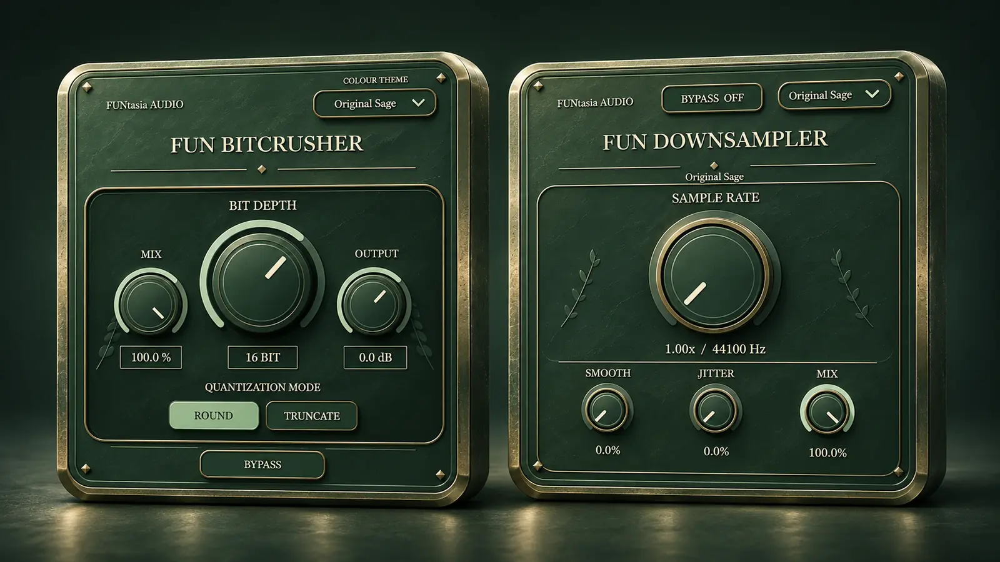
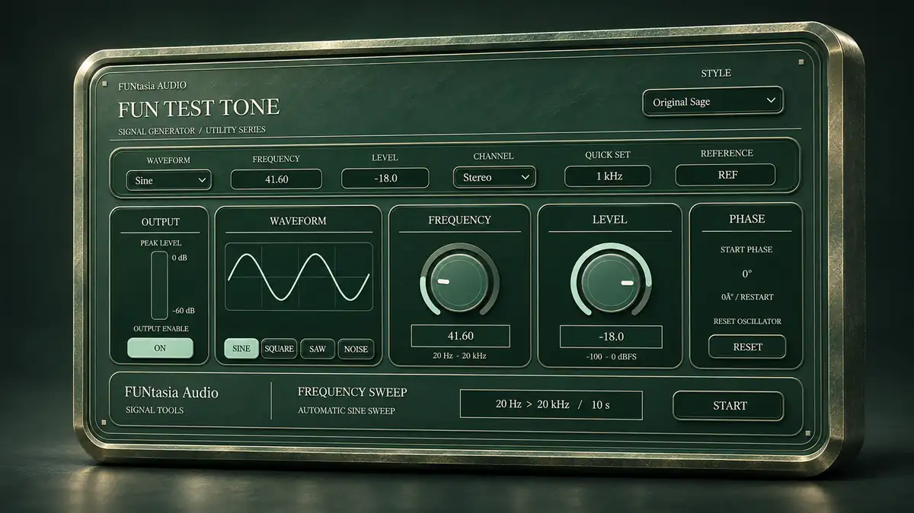
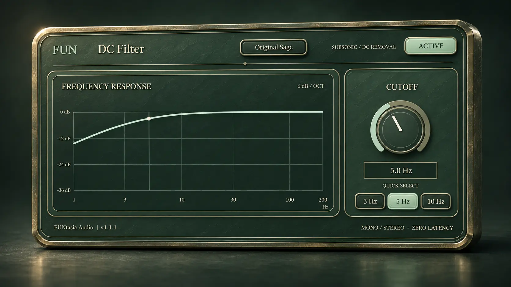
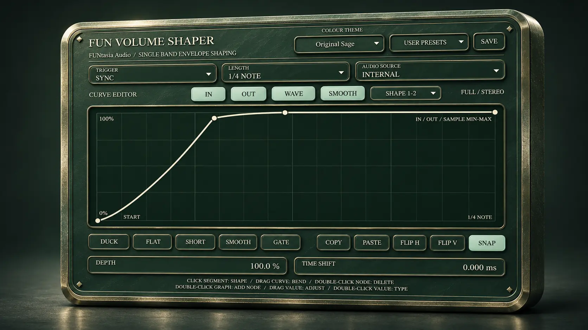
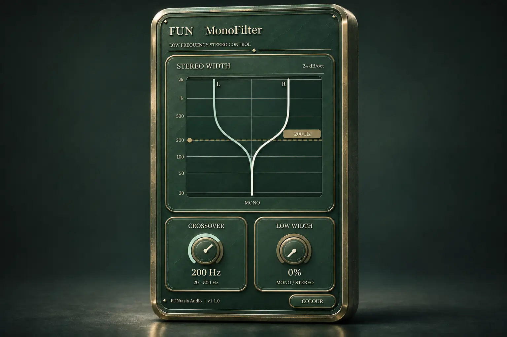
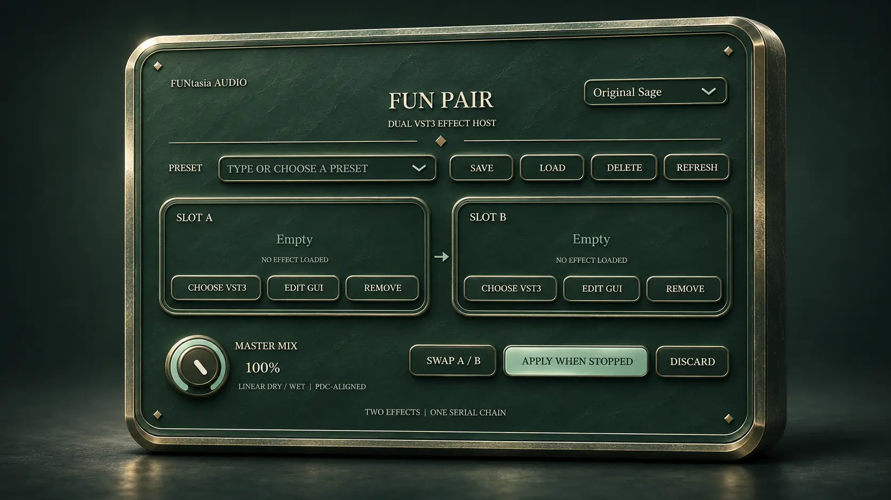
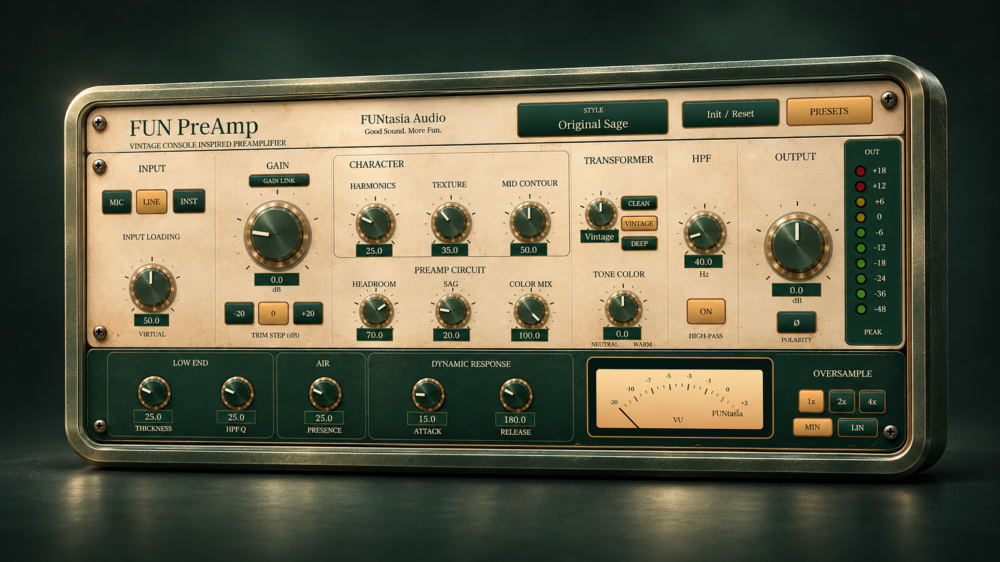

FUNtasia Audio
Каталог опубликованных продуктов
Вопросы и ответы ↓Изображения продуктов — концепт-арты; реальные интерфейсы плагинов могут отличаться.
Контроль качества: Каждое обновление проверяется с помощью pluginval (Strictness Level 10) и Steinberg VST3 Validator, а также проходит подробные функциональные и регрессионные тесты, включая Undo/Redo.

FUN Utility Pack

FUN Test Tone

FUN Analysis Pack

FUN Stereo Pack

FUN Dimension Expander

FUN DC Filter

FUN Dither

FUN Volume Shaper

FUN Fader

FUN MonoFilter

FUN Pair

FUN Rack FREE

FUN Drum Pad

FUN Room

FUN PreAmp

FUN Clipper & Limiter Pack

FUN Dynamics Pack

FUN OTT

The Deep Roots

FUN Clip Distortion

FUN WaveShaper

FUN EQ

FUN MEQ

FUN Kick

FUN Sampler

FUN Strike

FUN Basic Filter Pack
Нет подходящих продуктов
FUNtasia Audio · Q&A
Часто задаваемые вопросы
Это AI slop?
Нет. Мы используем ИИ в разработке, но не поручаем ему полностью автоматическое создание и публикацию плагинов. Мы принимаем проектные решения, проверяем реализацию, тестируем и исправляем проблемы. Подробнее о нашем подходе — в статье на Note.
Почему у вас так много плагинов?
Часть из них — штатные плагины для нашей обучающей DAW FUNtasia Studio. Мы также выпускаем их отдельно, чтобы ими можно было пользоваться независимо от DAW.
Проверяете ли вы бесплатные плагины?
Да. Мы уделяем внимание качеству как бесплатных, так и платных продуктов. О pluginval Strictness Level 10, Steinberg VST3 Validator и регрессионных тестах читайте на странице «Контроль качества».
Куда сообщать об ошибках и предлагать улучшения?
Приглашаем в наше официальное Discord-сообщество FUNtasia Alchemist Guild. Для сообщения об ошибке укажите версию продукта, DAW и шаги воспроизведения. Присоединиться к сообществу ↗
Планируется ли поддержка Mac?
Мы хотели бы обеспечить поддержку Mac, но прежде чем приступить к реализации, намерены тщательно оценить объём поддержки, который сможем предоставлять.